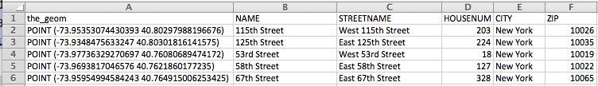

Warm-up: Turtles & GIS Locations
In this section, we will use
Trinkets, an on-line version of Python,
- to get started with Python and its Turtles package,
- to make a world map using latitude and longitude of cities, and
- to make a map of New York City with selected subway stops from NYC OpenData.
Turtles
We'll start by drawing shapes with the turtle library of Python. A library is an extra chunk of code, on top of what Python already has in it. Some libraries are built-in to Python, and some are designed by users which you can download separately.
Click the right-facing triange (Run) button to see the program:
The program has several parts:
- It imports the turtle library, so, that its functionality can be used to draw images.
- It sets up a turtle, named taylor, which is purple and turtle shaped.
- It has a loop that repeats the block of indented commands 6 times.
- The commands repeated move taylor forward 100 steps, stamps a turtle shape, and then turns left 60 degrees. These are repeated since they are inside the for-loop.
Challenges:
Try the following:
- Modify the program to make a square.
- Modify the program to make an octagon (8-sided polygon) that is blue.
- Make a red decagon (10-sided polygon) with a triangle stamped on each corner.
Harder: write a program that makes a 5-pointed star.
World Maps
We are going to use Python to make maps. Let's start by mapping cities of the world.
Locations in the world are usually indicated by their latitude and longitude.
- Latitude measures the number of degrees north or south of the equator. When written as a number, it ranges from -90 (the south pole) to +90 (the north pole).
- Longitude measures the number of degrees east or west of the prime meridian. When written as a number, it ranges from -180 to +180.
We will use those ranges to be our coordinates: (-90, -180) to (90,180). Let's map New York City (longitude: -74, latitude: 41):
Challenges:
In the trinket above, stamp the following cities (GIS coordinates are rounded to the nearest whole number):
- Los Angeles (longitude: -118, latitude: 34),
- Paris, France (longitude: 2, latitude:49),
- Tokyo, Japan (longitude: 140, latitude: 35), and
- Rio de Janeiro, Brazil (longitude: -43, latitude: -23).
NYC Maps
The same idea works for mapping at a local scale. Here's a map with Hunter College (longitude: -73.964, latitude: 40.768):
Since we are working with very small differences in numbers, we wrote a separate function to convert the latitude and longitude into numbers large enough for the turtle package to use. To plot a point with our map, we use
teddy.goto(scalePoints(lat,lon))
where
lat and
lon are the GIS coordinates of our points.
Challenges:
In the trinket above, stamp the following locations in different colors:
- Empire State Building (longitude: -73.985664, latitude: 40.748441).
- Grand Central Terminal (longitude: -73.977229, latitude: 40.752726).
- Apollo Theatre (longitude: -73.950056, latitude: 40.810018).
- Lincoln Center (longitude: -73.983489, latitude: 40.772464).
Mapping NYC Library Locations
NYC Open Data stores the GIS coordinates for many datasets. For example, the location of New York City libraries is stored in a format easily read by spreadsheet programs. The "Comma Separated Values" (CSV) files have each column separated by columns. Here's some of the
library CSV
file from
NYC Open Data:

The first column has the longitude and latitude of the library. The next contains the name of the library. Additional columns have more details about the address and location.
Let's use the GIS coordinates from this OpenData file to map the 115th Street Library. It's at (-73.95353074430393, 40.80297988196676). Our trinket maps do not have that precision, so, we can round to: (-73.954, 40.803) and write:
teddy.goto(scalePoints(-73.954, 40.803))
Challenges
Stamp the locations of
- 125th Street Library,
- 53rd Street Library, and
- 58th Street Library
onto a map of New York City. The GIS coordinates are in the above image of the CSV file.